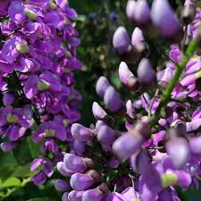
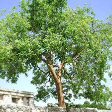
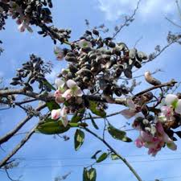
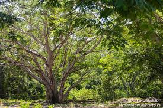
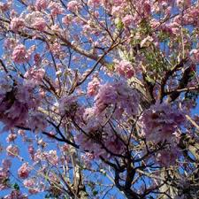

Volver
Plantas Endémicas de Yucatán

Dependiendo de la disponibilidad de agua puede ser perenne o caduco. Alcanza hasta 18 m de altura y de 20 a 25 cm de diámetro a la altura del pecho. El tronco es recto y corto, la copa es grande, extendida y se compone de ramas finas, ascendentes con follaje denso. Las hojas son compuestas, imparipinnadas y tienen 15 folíolos de 3 a 8 cm de largo, oblongos u ovados, de ápice acuminado a subcaudado. Su floración es durante septiembre y octubre y la fructificación de abril a junio. Las flores son papilionáceas, púrpuras-violeta, y dispuestas en racimos. Los frutos son vainas oblongas y aplanadas, indehiscentes y de color marrón claro cuando están maduros. Cada fruto contiene de una a dos semillas. Las semillas son reniformes, aplanadas lateralmente, de 12.0 a 14.5 mm de largo, de 6.8 a 7.0 mm de ancho y 4.5 a 6.0 mm de diámetro. La cubierta de la semilla es rojiza oscura marrón a marrón oscura, lisa, opaca y coriácea.
Regresar

El chaká es un árbol con un tronco recto y escamoso, muy ramificado en la copa. Produce pequeñas flores aromáticas de color crema-verdoso y sus frutos son cápsulas.
Regresar

El jabín tiene una amplia distribución geográficamente hablando, es posible encontrar a esta especie, en la vertiente del Golfo de México, desde el sur de Tamaulipas y San Luis Potosí hasta la Península de Yucatán y la parte central de Chiapas, en la vertiente del océano Pacífico es posible encontrarla desde el estado de Jalisco hasta Chiapas. Esta especie, es pionera en la regeneración natural y altamente abundante de la vegetación secundaria, pues aparece con frecuencia y abundancia en las áreas en las que se haya hecho un desmonte, incluso puede aparecer como especie dominante en el área, la presencia del jabín se da desde el nivel del mar hasta los 500 m.s.n.m, en suelos someros y con poca retención de humedad.
Regresar

La planta 'pich' es un árbol grande de hoja caduca. Se caracteriza por su follaje abundante y hojas bipinnadas. Sus ramas tienden a ascender, y su corteza es de color gris claro con numerosas lenticelas alargadas. Las flores son pequeñas.
Regresar

Es un árbol que puede alcanzar hasta 15 metros de altura. Se caracteriza por tener un tronco recto y fisurado, con una copa piramidal. Sus flores son de color rosa-morado y muy llamativas, ubicadas al final de las ramas.
Regresar
Derechos Reservados"Abdy Zapata y Fernanda Rodriguez"©2025
|